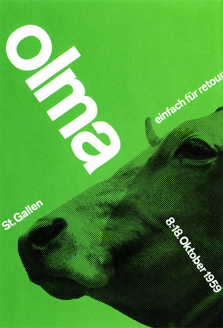

The Man
Josef Müller-Brockman was born on 4 May 1914 and is arguably one of the most influential designers of Swiss Design. He started his career as an apprentice to the designer, Walter Diggelman. In 1936 he went on to create his own Zurich studio specialising in graphics, exhibition design and photography.
He thought of himself as a problem-solver and he often designed concert and exhibition posters, brochures, typefaces, dinnerware and even stage design. When asked, in 1954’s Graphics Magazine, Issue 53, which of these activities were his favourite, he offered no definitive answer. He liked them all.
As well as teaching and serving as a designer, JM-B also wrote several books based on graphic designing. These include - ‘The Graphic Artist and his Design Problems’, ‘History of Visual Communication’ and ‘Grid Systems in Graphic Design’. These books provide an in-depth analysis of JM-B’s work and philosophies and can provide an insight for aspiring graphic designers who look to learn more about the profession.
He also collaborated with Shizuko Müller-Yoshikawa to write ‘History of the Poster’. This book shows off a wide array of posters, giving examples from the end of the nineteenth century until the early seventies. Focussing on the four fundamental conceptions of a poster, they also explain the nature of a poster and indicate the laws of designing one.
JM-B was self-critical of his work, in one of his final interviews in ‘Eye Magazine’ he said -
“I would advise young people to look at everything they encounter in a critical light … Then I would urge them at all times to be self-critical.”
Considering this interview took place a year before his death, it shows the great interest that his work still held, and how relevant and respected he was. He obviously had a real passion for his work and always happy to give his opinion.
He often stated that he became a designer by accident, when he used to pad out his school work with illustrations to avoid writing more words and fortunately his teacher recognised his talents and guided him to the arts.
His work is still influential to this day to designers all around the world. It was clean and simple, mainly due to the fact that he would stick to a strict grid-like structure, which is something I will discuss later on, to create many of his pieces. Considering Switzerland and the rest of Europe laid in ruins after the 2nd World War, his work was not only important to fellow designers but to Europe as a whole, urgently looking for change and a fresh start during the rebuilding process. I’m sure his work was a refreshing change and must have been a much welcomed one at that.
Swiss Design
The definition of Swiss Design, that is according to Wikipedia, is - ‘a graphic design style emerged in Russia, the Netherlands and Germany in the 1920's, and was made famous as it was developed by designers in Switzerland during the 1950s’.
JM-B and Armin Hofmann were the two main designers that led this style, which favoured simplicity, objectivity and legibility.
At the time of the movement the critics didn’t take too kindly to it, they considered the style to be cold and impersonal and thought the focus on the use of grids led to pieces of work that generally looked the same. However looking back at the work today, we can appreciate the approach of simplicity within these pieces of art.
The Swiss Design favoured the use of, sans-serif typography, grids and asymmetrical layouts within their work. By using a combination of typography and photography as a means of visual communication, posters were the main pieces of work that this design would create, as this was seen as the most effective form of communication available to them.
JM-B believed that Swiss design was both an attitude and a style. His most lasting value lies in the logic of his method, that content is the key factor and elements that don't enhance the message being portrayed, should be removed.
Whilst their work was asymmetrically organised, the grid system implemented would help create a visual unity throughout. There would often be a heavy use of repetition in colour and shapes which was further emphasised through transformation of the shapes. As well as geometric shapes as mentioned previously, photography was often used within this style. It was seen as an excellent way to communicate.
His Work & the Grid Structure

When we look up the meaning of the word ‘grid’ it is described as - ‘a network of lines that cross each other to form a series of squares or rectangles’.
So when the word ‘grid’ is mentioned you might think that designing posters and brochures would be constructive and would allow no room for creativity. However the way JM-B incorporated the ‘grid structure’ into his work, it allowed him to create pieces that were clean and simple, allowing them to be suitable for the masses, enabling him to communicate to those speaking other languages within his home country of Switzerland.
“The grid system is an aid, not a guarantee. It permits a number of possible uses and each designer can look for a solution appropriate to his personal style. But one must learn how to use the grid; it is an art that requires practice.”
The Zurich Town Hall Poster Advertisements that JM-B designed, are often considered to be his most recognisable work. Many claim they created mathematical harmony which reflected the harmony of music , but most importantly the work was graphic as apposed to illustrative, sticking to the saying “less is more”, something that JM-B and the Swiss Style were most known for.
My Thoughts
JM-B seemed like a very modest man, and appeared to have a genuine respect for every person’s unique way of creating their own art.
Q. “What do you regard as your best work?” JM-B. “The white reverse sides of my posters.”
I can’t help but think that the modern ‘Flat Face Design’ of many of the popular websites of today, were heavily influenced by JM-B’s work. The use of white space and large images have become the norm. And when we compare that with the websites of 10 years ago, when GIFs and flashing images were the common theme, I think we can all agree that it is a much better alternative!
One of my favourite pieces that he designed is the Olma ‘Cow Poster’. Due to the fact he stuck to three main elements - type, colour & image - it allowed the poster to be simple, yet effective and eye catching. It is quite clear that he stuck to the ‘Grid System’ while creating this piece, since the text perfectly aligns with each other and the image of the cow is perfectly aligned to match the text. The poster wouldn't look out of place in a modern art gallery!
I cannot help but wonder what JM-B would have made of today’s technology and how much the world has developed, with images being constantly used as apposed to text being the more dominant. And how many people think they are a designer, using Instagram to upload and edit pictures taken of their everyday life.
His work has encouraged me to pursue a simplistic approach to my own work, realising it is a design style that may not be suitable for every job, but I am sure will have an influence on me and others for years to come.